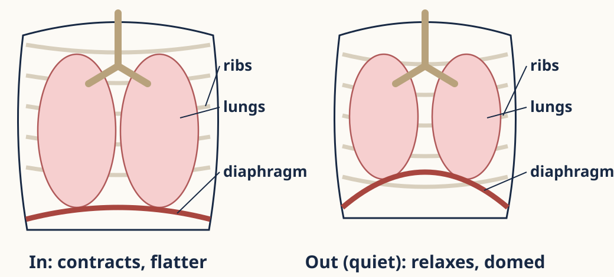
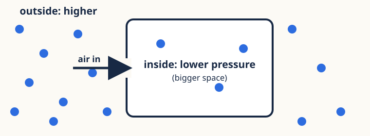
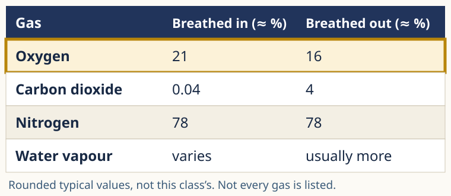
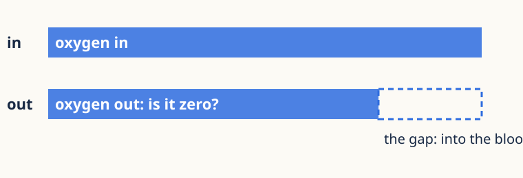

Support cards
Use the card your teacher gives you. It helps with one step; the thinking is still yours.
Your Tuesday task: your letter

Card M · Muscle
Breathing in: diaphragm and intercostals contract; diaphragm flattens. Quiet breathing out: they relax; diaphragm domes.
Recheck: V1M, on your own.
Card V · Volume
Ribs up and out + diaphragm flattens → chest volume up. Muscles relax, ribs down and in, diaphragm domes → volume down.
Recheck: breathing out, what happens to the volume?

Card P · Pressure
Bigger space → lower pressure inside than outside; smaller → higher.
Recheck: a chamber gets smaller. Pressure inside vs outside?
Card F · Airflow
Air moves from higher to lower pressure. Lungs don’t suck: air is pushed in by the higher pressure outside.
Recheck: pressure inside is higher than outside. Which way does air go?
Card D · Process mix-up
Ventilation: air in and out of the lungs. Gas exchange: diffusion between alveolus air and blood. Respiration: in cells, releases usable energy.
Recheck: which one happens in your muscle cells?
The air data

Card R · Reading
Row first, then column. Find Oxygen, then read in and out.
Recheck: read both nitrogen values, with no highlight.
Card U · Units
Worked: CO₂ out − in = 4 − 0.04 = 3.96 percentage points more. Yours: O₂ out − in = 16 − 21 = ___ percentage points.
Recheck: the nitrogen change, in percentage points.

Card N · None left?
Not all the oxygen is used: about 16% is still in breathed-out air.
Recheck: expired air has about 4% CO₂. Is the other 96% oxygen?
Card T · Turns into?
In the lungs, gases move between air and blood; they don’t turn into each other. Nitrogen: 78 → 78. O₂ goes into the blood; CO₂ comes from cells.
Recheck: does nitrogen become CO₂? Use a row.
Card L · Missing link
Fill the gap: cells use O₂ in respiration → ? → O₂ diffuses from alveolus air into blood → less O₂ breathed out
Recheck: write the CO₂ chain on your own, from cells to breathed out.
Card E · Evidence
This table gives typical rounded values for many people. One person’s values need their own measured sample, under known conditions.
Recheck: can this table give one pupil’s exact value? Why not?
Write in your book. Show your teacher the recheck before you put the card away.